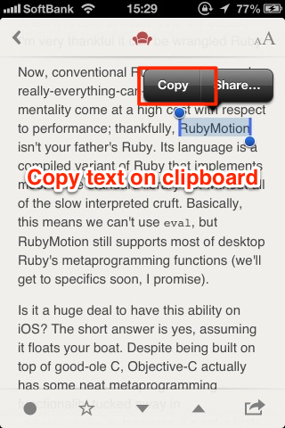
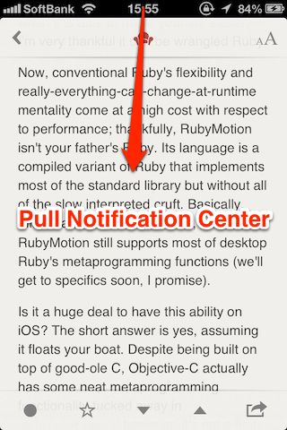
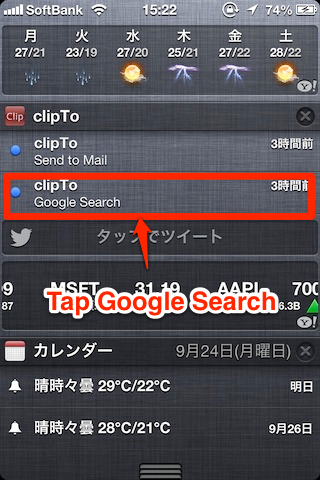

How to Use.
1. Copy text on clipboard

2. Pull notification center

3-a. When you tap “Send to Mail” menu, mailer app will launch with copied text.


3-b. When you tap “Google Search” menu, mobile safari will launch with google result page searched by copied text.
